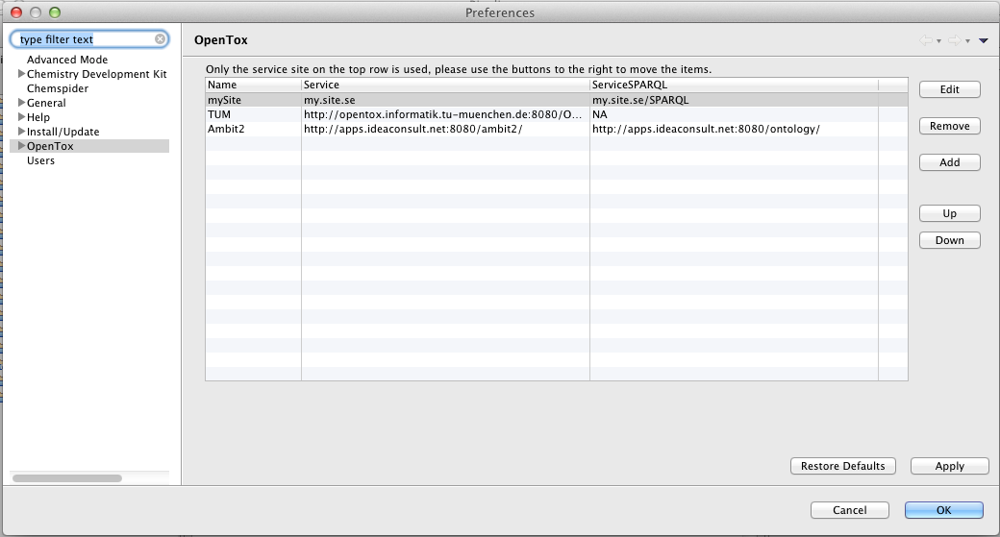
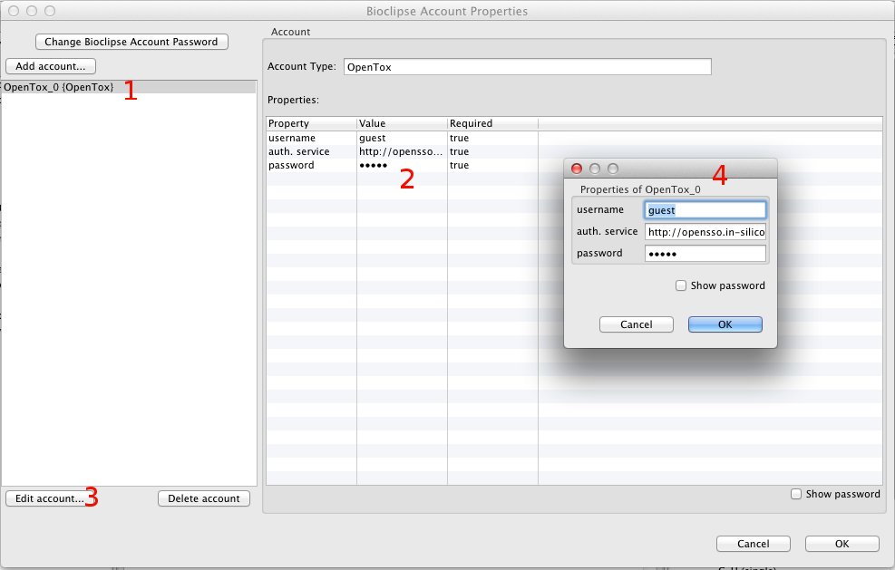

OpenTox preferences
Because the login settings for the OpenTox web-service are handled as an account under your Bioclipse user account while other settings are global (i.e. same for all users), the preferences are divided between two different parts of the Bioclipse preferences.
Main preferences
The settings that are common for all OpenTox-accounts in Bioclipse are gathered under the OpenTox-tab in Bioclipse preferences, see the image below. Right now it is only possible to add, edit or delete the service-site and serviceSPARQL-site for OpenTox. Observe that only the service on the top row of the list is used. You can move the items in the list with help of the Up and Down buttons to the right of the list.
The usage of OpenSSO is administrated via your OpenTox-account, see below . This gives different users the opportunity to use different OpenSSO-services in the same installation of Bioclipse without changing the preferences all the time.

OpenTox user preferences
To edit your login information to the OpenTox web-service (i.e. the OpenSSO) and which OpenSSO service you use, you need to open the preferences for your user account. Open the User-tab in Bioclipse preferences and select your user account, then press the Edit...-button. You will now be asked for the password to your Bioclipse user account, fill it in and press Ok.
Now a window that looks simular to the one in the image below appears. Choose your OpenTox-account in the list to the left (1). Then you can edit your settings for it either in the spread sheet to the right (2), or by pressing Edit account... (3) beneath the list with the accounts, and then change the dialog (4) that then appears. If you want to know more about the user preferences, you can read about it in Using preferences in the Bioclipse users manual / Bioclipse user account.
